Wi-Fi & Enterprise Application Telemetry Analyzer
Observabilidad L1-L7, Telemetría Correlacionada y Navegación Modular Vertical
Propósito del Documento:
Esta guía técnica constituye la referencia maestra de ingeniería, arquitectura de software y modo de operación para el personal de TI, ingenieros de redes y analistas de soporte. Detalla la estructura del sistema, el flujo de datos sincrónico y la operación práctica de los 9 módulos funcionales organizados bajo la nueva interfaz de barra vertical izquierda (Release 4.0).
Motor nativo Python estándar (Zero Pip Dependencies), persistencia SQLite WAL y soporte multiplataforma Windows y Linux.
Barra lateral izquierda agrupada en Operación, Gestión y Sistema, con topbar contextual, migas de pan y colapso rápido.
En las operaciones empresariales contemporáneas (centros logísticos con WMS Manhattan/SAP, tiendas de retail con terminales POS móviles, plantas industriales y complejos hospitalarios), el personal depende de dispositivos móviles de radiofrecuencia (pistolas PDA, lectores de código de barras, carretillas elevadoras y tablets).
Cuando el usuario experimenta lentitud o congelamiento de pantalla, típicamente reporta: "Se cayó el Wi-Fi". Sin embargo, en redes corporativas la falla puede originarse en tres capas totalmente independientes:
| Capa del Modelo | Causa Real del Problema | Responsable de Resolución |
|---|---|---|
| Capa 1/2: Wi-Fi RF & Roaming | Potencia de señal baja (-80 dBm), antena apagada, cliente pegajoso (sticky client) o handoff lento entre Access Points. | Infraestructura / Redes |
| Capa 3/4: Red Local & Transporte | Buena señal Wi-Fi, pero el router principal (Gateway), switch de distribución o enlace WAN sufre saturación o pérdida de paquetes (Ping alto). | Infraestructura / Redes |
| Capa 7: Servidor & Aplicación | La red física responde en 3 ms, pero el servidor web o motor de base de datos tarda más de 4 segundos en entregar el primer byte (TTFB elevado). | Equipo de Aplicaciones / DB |
El sistema está diseñado bajo el principio fundamental de Zero External Pip Dependencies: opera enteramente con las bibliotecas estándar incluidas de fábrica en Python 3.8+ y no requiere conectividad a Internet para su funcionamiento (arquitectura 100% Air-Gapped).
Servidor HTTP multihilo basado en http.server.ThreadingHTTPServer, exponiendo una API REST completa y despachando la SPA estática en el puerto 8050.
Mide con precisión de microsegundos las 5 fases de conexión (DNS, TCP, TLS, TTFB y Transferencia) mediante sockets crudos con reuso de conexiones Keep-Alive.
Detección automática de Gateway, servidores DNS locales, ping concurrente multinodo y trazabilidad salto a salto (traceroute/tracert).
Base de datos SQLite con modo WAL (Write-Ahead Logging) para soportar lecturas y escrituras simultáneas sin bloqueos de concurrencia.
Resolución offline inmediata de más de 40,300 fabricantes de hardware MAC, con soporte de prefijos personalizados y sincronización oficial en 1 clic.
Asociación de direcciones BSSID físicas a nombres amigables de controladoras (ej. Cisco Catalyst, Aruba ClearPass, Ubiquiti UniFi).
El estado dinámico del sistema está gobernado por el objeto central WiFiState, protegido por mecanismos de bloqueo por hilo (threading.Lock). Un hilo independiente ejecuta el ciclo continuo de telemetría (por defecto cada 5 segundos), consulta la capa de red del sistema operativo, ejecuta la sonda HTTP y persiste la muestra en la tabla telemetry_samples.
A partir de la versión Release 4.0, la interfaz de usuario migró de pestañas horizontales inferiores a un modelo moderno de Barra Lateral Izquierda Vertical Persistente y Barra Superior Contextual.
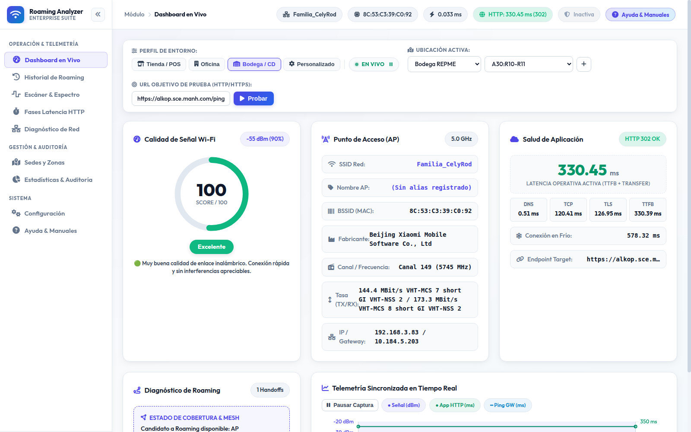
La barra lateral fija organiza los módulos de trabajo en tres dominios conceptuales claramente diferenciados:
• Dashboard en Vivo: Vista general de salud, señal RF y gráfica multieje.
• Historial de Roaming: Saltos entre antenas y calidad del handoff.
• Escáner & Espectro: Curvas de canales 2.4/5/6 GHz y tabla de APs.
• Fases Latencia HTTP: Desglose en 5 fases hacia el servidor empresarial.
• Diagnóstico de Red: Ping a Gateway, DNS, Intranet y Traceroute.
• Sedes y Zonas: Catálogo maestro territorial y chips de selección rápida.
• Estadísticas & Auditoría: Percentiles P50/P95/P99, filtros por fecha y descarga del paquete forense ZIP.
• Configuración: Conmutación de antenas Wi-Fi en caliente, sincronización IEEE OUI, alias de APs y credenciales de autenticación.
• Ayuda & Manuales: Centro de documentación integrada, visor interactivo y descarga de manuales PDF.
El botón de colapso superior [«] contrae la barra a un ancho de 76 píxeles mostrando únicamente los iconos con tooltips flotantes. En pantallas móviles, se convierte en un cajón flotante con overlay oscuro.
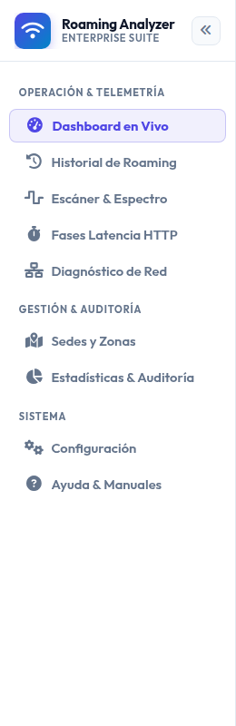
Constituye el panel principal de supervisión operativa. En la parte superior contiene la Barra de Control para fijar el perfil de entorno (Tienda, Oficina, Bodega), pausar/reanudar el motor, alternar la Sede y Zona activa y probar URLs HTTP en demanda.
Inmediatamente debajo se presenta la cuadrícula de Tres Tarjetas de Salud Operativa:
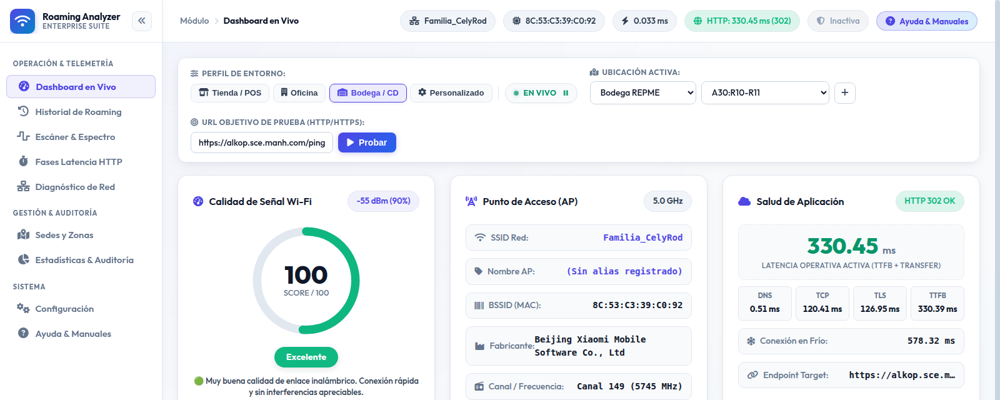
La mitad inferior del Dashboard presenta el Gráfico Sincronizado en Tiempo Real (Chart.js), que traza en un solo lienzo cronológico la curva de potencia Wi-Fi (dBm en escala invertida), la latencia de aplicación HTTP (ms) y el tiempo de respuesta al Gateway (ms).
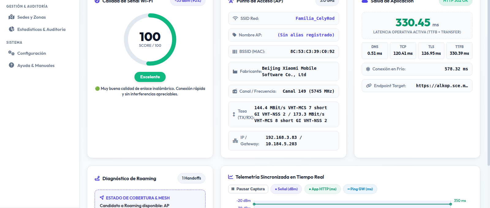
Registra automáticamente cada transición de antena (handoff) cuando el dispositivo se desplaza. Cada salto calcula la variación matemática de señal Δ dBm = Señal Nueva - Señal Anterior y emite un veredicto de calidad:
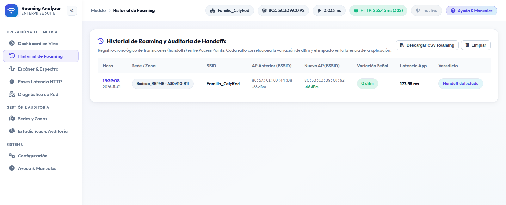
Combina en una única vista un analizador de espectro visual con curvas parabólicas de distribución de canales en las bandas de 2.4 GHz, 5 GHz y 6 GHz, y una tabla detallada de APs vecinos detectados en el aire, resolviendo el fabricante IEEE OUI y nivel de señal en tiempo real.
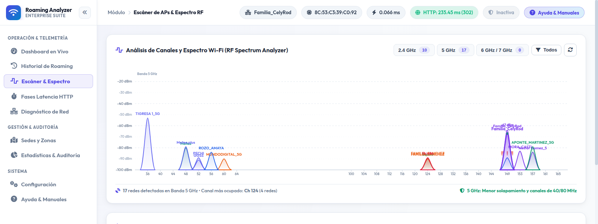
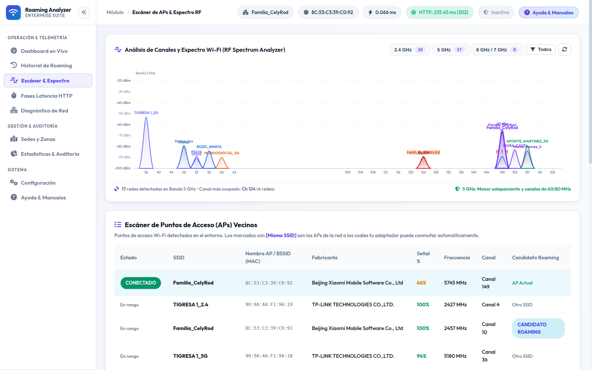
Desglosa quirúrgicamente la conexión contra la aplicación web corporativa (ej. Manhattan SCALE, SAP, Intranet) en 5 fases lógicas para identificar exactamente en qué componente radica la demora:
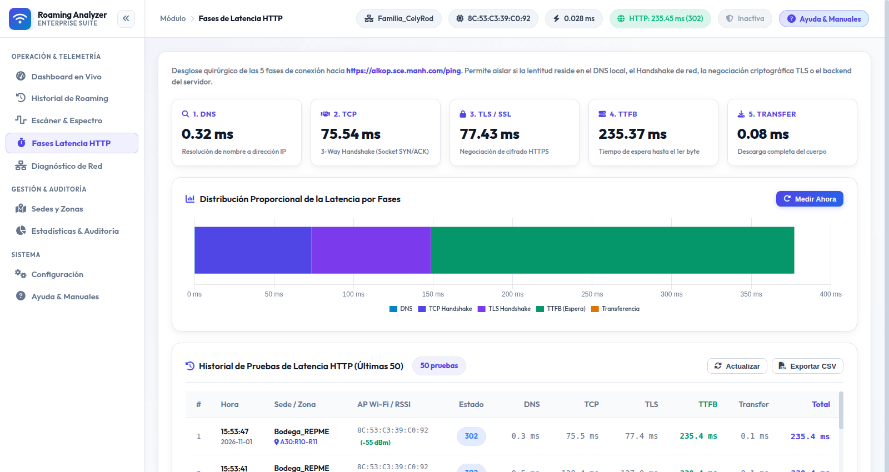
Ejecuta diagnósticos concurrentes hacia cuatro destinos de red fundamentales (Gateway Local, Servidor DNS Corporativo, Servidor de Aplicación Intranet y Servidor Público Internet), y permite ejecutar trazabilidad salto a salto (Traceroute) para identificar qué router o switch de piso intermedio descarta paquetes.
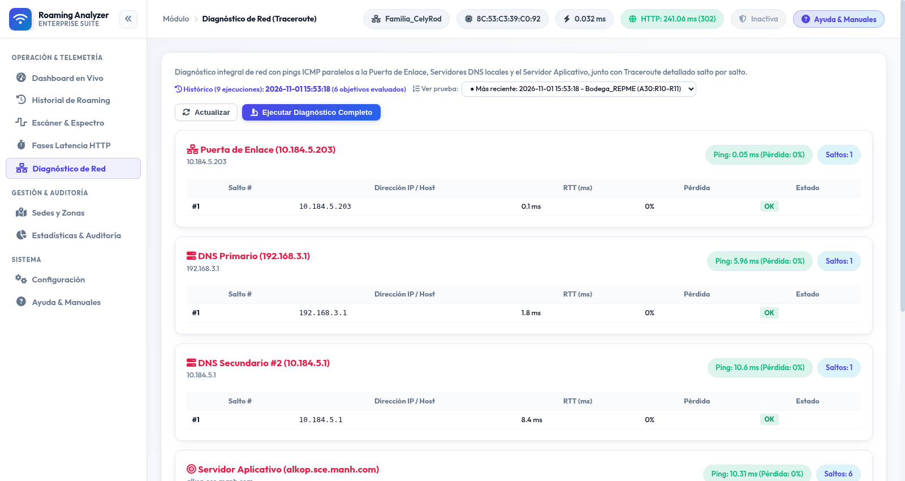
Permite administrar el catálogo territorial para etiquetar cada medición en campo. Es compatible con el archivo maestro data/sedes_zonas.json y permite crear sedes, agregar zonas operativas y recargar el catálogo en caliente de manera limpia.
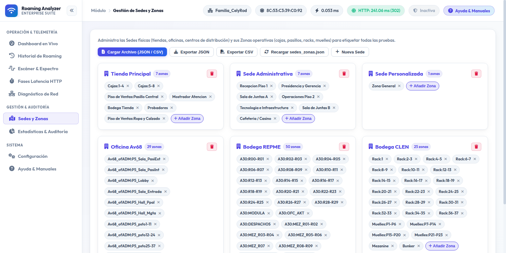
En redes corporativas, el promedio aritmético oculta incidentes graves. Este módulo calcula los percentiles estadísticos reales:
El botón 📦 Exportar Todo (.ZIP) genera en 1 clic un archivo comprimido con 4 informes CSV completos (Telemetría, Roaming, HTTP, ICMP) y una ficha ejecutiva de texto para adjuntar al ticket de soporte.
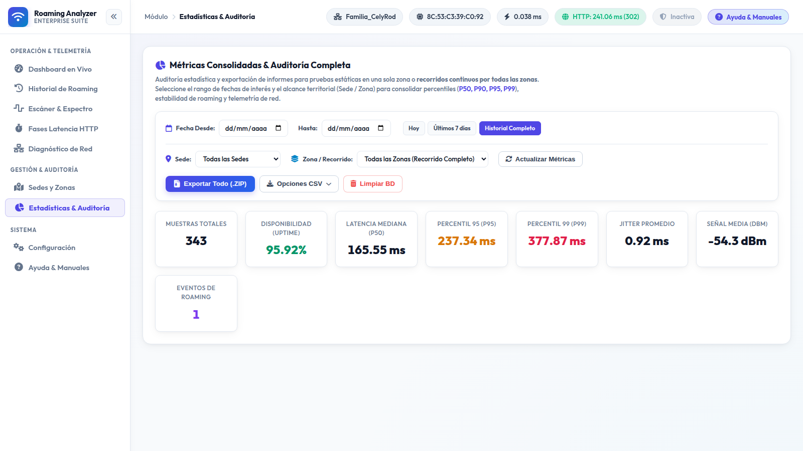
Consolida todos los parámetros de operación del sistema: selección de antena Wi-Fi activa, frecuencia de muestreo, validación de certificados SSL, base de datos de fabricantes IEEE OUI, inventario de nombres de APs y credenciales de dominio (NTLM, Basic, Bearer).
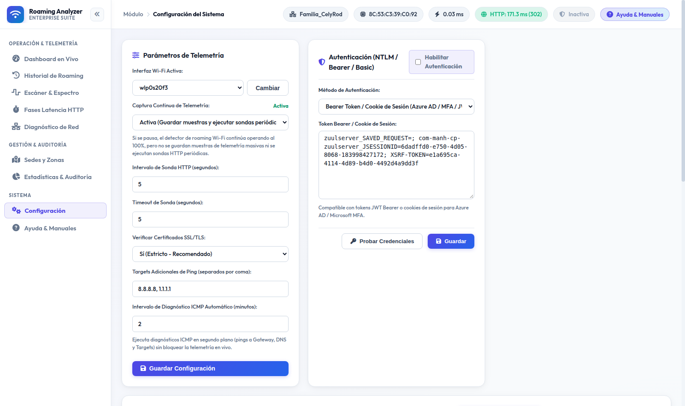
Proporciona acceso directo en pantalla a los manuales oficiales del sistema en formato PDF, guías operativas resumidas para Helpdesk y un glosario técnico exhaustivo de telecomunicaciones y radiofrecuencia (dBm, RSSI, BSSID, TTFB, Roaming, Handoff).
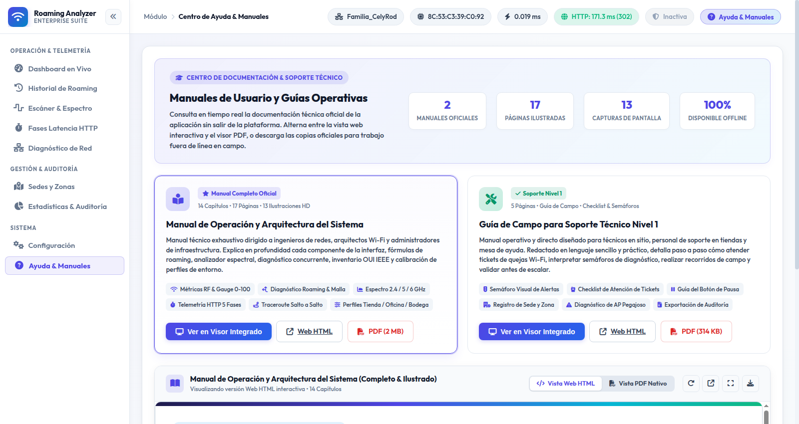
Para diagnosticar con precisión fallas intermitentes en almacenes o tiendas, se debe ejecutar el siguiente protocolo oficial en tres fases:
1. Iniciar el servicio en la laptop o terminal de prueba (run.bat o ./run.sh).
2. Abrir el navegador en http://localhost:8050.
3. En la barra superior, fijar la Sede (ej. Bodega CLEN) y Zona inicial.
4. Pulsar el botón Limpiar BD en Estadísticas si se desea una prueba aislada.
1. Seleccionar el módulo Historial de Roaming en la barra lateral.
2. Caminar a velocidad constante atravesando los pasillos o racks críticos.
3. Observar si la señal cae por debajo de -75 dBm sin cambiar de AP (síndrome de cliente pegajoso).
4. Si hay salto, verificar que el veredicto sea Verde (+10 dBm) o Azul (+5 dBm).
1. Ir al módulo Estadísticas & Auditoría en la barra lateral.
2. Filtrar por la fecha de la prueba (ej. Hoy).
3. Verificar los percentiles P95 y P99.
4. Hacer clic en 📦 Exportar Todo (.ZIP).
5. Adjuntar el archivo ZIP al ticket de soporte como evidencia irrefutable.
• Si TCP Handshake < 15 ms pero TTFB > 3000 ms: Escalar a Equipo de Aplicaciones / Base de Datos.
• Si Wi-Fi < -76 dBm o hay Pérdida en Gateway: Escalar a Equipo de Redes / Infraestructura.
El analizador expone una interfaz REST completa en formato JSON para integración con sistemas de monitoreo empresarial externos o scripts de automatización:
| Endpoint | Método | Descripción | Parámetros / Query |
|---|---|---|---|
/api/status |
GET | Telemetría completa consolidada en tiempo real (RF, AP, Ping, HTTP). | Ninguno. |
/api/roaming-history |
GET | Listado cronológico de eventos de handoff y saltos de AP. | location, zone, limit |
/api/scan |
GET | Lista de Access Points detectados en el aire con fabricante OUI. | Ninguno. |
/api/http-history |
GET | Historial de pruebas de latencia HTTP de 5 fases. | location, zone, limit |
/api/net-diag |
GET | Diagnóstico de red activo hacia Gateway, DNS, Intranet e Internet. | Ninguno. |
/api/stats |
GET | Resumen estadístico con percentiles P50, P90, P95, P99 y conteos. | start_date, end_date, location, zone |
/api/export |
GET | Descarga de archivos CSV individuales o paquete completo ZIP. | type=zip|roaming|http|icmp, start_date, end_date |
/api/config |
GET / POST | Consulta o modificación de parámetros de configuración central. | Cuerpo JSON con llaves a actualizar. |
/api/clear-database |
POST | Vaciado de muestras históricas de telemetría (mantiene configuración). | Ninguno. |